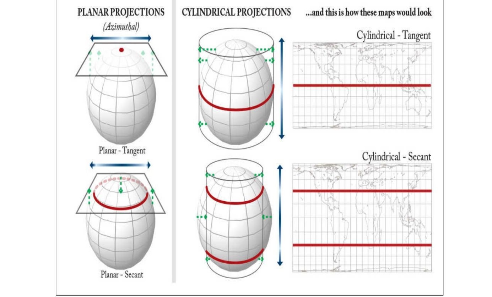
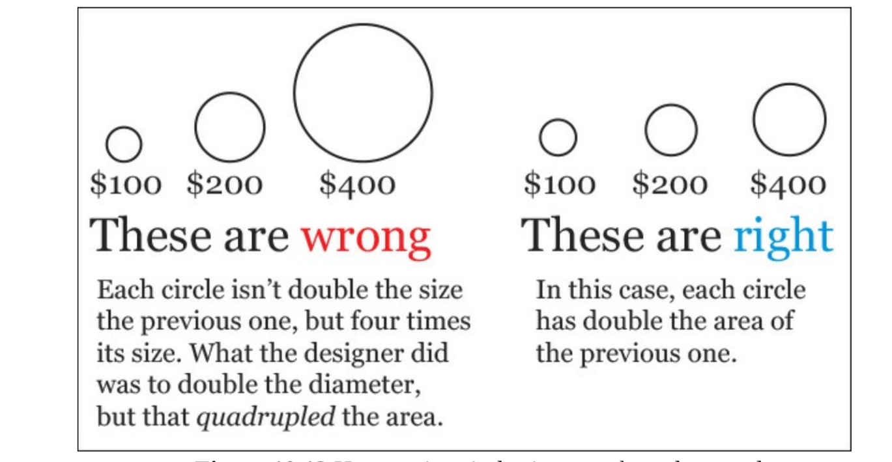

Two mistakes that people often make when creating visualizations with maps
Projection is the process of making a globe, or a portion of it, fit into a flat picture. Transforming a globe into a two-dimensional representation some features will be distorted. There's no 100 % accurate of globr other than a globe itself.
Projecting on a flat surface, there are five properties can be distorted.
Shape
area
angles
distance
direction

Maps don't enable very accurate judgement even if objects on a proportional symbol map are correctly sized, readers won't estimated their relative sizes well.
